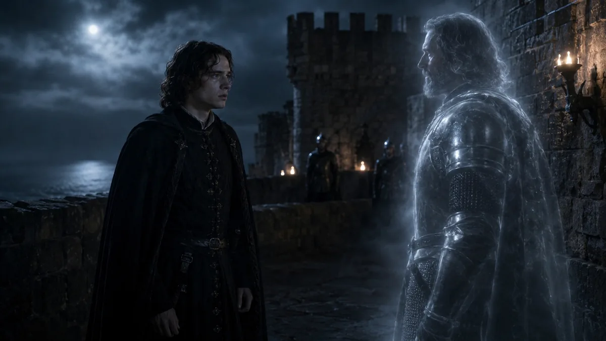

SIGNAL · 01 — 我是誰
一副監聽耳機，把我從數位學習設計帶進聲音。和朋友比較設備聽感時，我們聽得出差異，卻說不清楚這差異是來自頻率、空間，還是動態。
我是把「說不清楚」當成題目的人——讀數位學習設計出身，自學 Pure Data 與訊號處理，正往聽覺感知與聲音應用走。我想做的一直是同一件事：把聽覺經驗，變成可以動手操作的東西。
接下來的三站，是這件事做到哪裡的證據：
一副監聽耳機，把我從數位學習設計帶進聲音。和朋友比較設備聽感時，我們聽得出差異，卻說不清楚這差異是來自頻率、空間，還是動態。我想做的一直是同一件事：把說不清楚的感受，變成可以動手操作的東西。
設計註記：聲音全程 opt-in，預設安靜——靜默是材料。
STATION · CH 01 — 互動站
Pure Data 寫的即時訊號處理：位置進來，聲音出去。原型先靠 AI 協作搭起來，再逆向拆解訊號路徑，拆到能自己說明、自己改。
設計註記：以軟起音與 limiter 壓住爆音——探索應該是安全的。
深入這件作品:作品檔案(dossier)→
同一個聲音左右各放一次，拉開兩者的時間差，聽方向怎麼變。
設計註記：≤1ms 疊加、約 2–50ms 融合、>50ms 拆成回聲。
STATION · CH 02 — 影院站
AI 生成場景與配樂、本人剪輯整合的文學影音實驗——四十秒、八幕、雙語字幕，權利鏈完整可查。

Song: Blinds-Soft Lament — Suno 生成 · 00:00–00:40 · 非營利用途經 Suno 書面確認
誠實揭露一項規格差異：原提示要求純音樂，實際輸出含英語歌詞與人聲——公開版本以實際成片為準，呈現差異而非抹除。
設計註記：這一站的底色壓到全站最暗，黑邊收攏視線。
深入這件作品:作品檔案(dossier)→
STATION · CH 03 — 田野站
地方文化見習的影音成品——潭墘、糖廠(上/下)、蒜頭老街，四部合計 9 分 29 秒；分鏡、外拍、剪輯與後製訊號處理、跨裝置播放驗證。
見習為雙人同梯；此處列出的，是工作日誌記載由本人負責的影音線。
設計註記：格線在這裡逐漸消散，只留一條地平線——片子在哪裡拍，房間就長成那裡的樣子。
深入這件作品:作品檔案(dossier)→
BACKSTAGE — 控制室
每一格都掛著可查核的實據。發布前的機器強制檢查——核准永遠是人，閘門只是不讓遺忘發生。你看到的本頁，就是通過全部閘門後的部署產物:
設計註記：這一站的殘響全站最低，回饋聲又乾又短——控制室聽乾的訊號。
這套檢查，連同整個網站，原始碼都公開:github.com/ruyuang0509/ruyuang-portfolio-next
MASTER OUT — 訊號送出
開頭那顆訊號走過三站，在這裡送出。我要帶進研究所的題目就是它：把多聲道聆聽的建置與理解門檻，再調低一點。
這是聲響的那一半。人工智慧的那一半你剛走過——控制室那套機器守規則、人做核准的工作法，會跟著題目一起進來。
「先讓路平坦，再思考如何裝飾風景。」
EXIT — 出口
本站提供完整與精簡兩種瀏覽方式——與我研究所關注的「降低聆聽門檻」出於同一信念。
© 2026 如願 · 本站無廣告、無付費牆、無聯盟收益
原始碼:github.com/ruyuang0509/ruyuang-portfolio-next——網站本身，也是一件公開的程式作品。
研究筆記與方法紀錄——正式站 research 區提供。
證書、佐證與聯絡——正式站出口區提供；原型不承載個資。